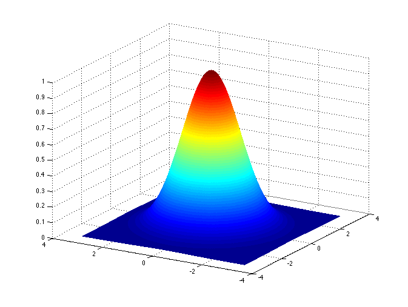

1. Image Analysis#
2. Ways of representing an image (or color) as a number#
Binary: Each pixel has a value of 0 or 1 (black or white). Each pixel has 1 bit of data (\(2^1\) possible values).
grayscale: Each pixel has a value between 0 and 255 (black is 0 white is 255) Each pixel has 8 bits of data (\(2^8\) possible values)
RGB: storing a value for each pixel as three component colors - Red, Green, Blue Each pixel has three 8 bit values. All colors combined corresponds to white
CMYK: Uses Cyan - Magenta - Yellow and combining colors makes Black (this is used more for printing)

Since CMYK is a subset of RGB, so you can’t always print what is on the screen

Any transformation between CMY and RGB is an approximation. One simple way of transforming from RGB to CMY is:
C = 255 - R
M = 255 - G
Y = 255 - B
2.1. Hue, Saturation, Intensity (or lightness)#
Another way of representing colors with three numbers

Source: https://en.wikipedia.org/wiki/HSL_and_HSV#/media/File:HSL_color_solid_cylinder_saturation_gray.png
{kind=link}
3. Convolution in two dimensions#
A two-dimensional extension of the convolution concept covered in filtering time series.
Image matrix (input) \(A\)
Kernel matrix \(K\)
Convolution matrix (output) \(B\)
Note that the \(*\) operator indicates convolution, not matrix multiplication.

Source: https://en.wikipedia.org/wiki/Kernel_(image_processing)#/media/File:2D_Convolution_Animation.gif
#/media/File:2D_Convolution_Animation.gif){kind=link}
A common kernel in image analysis is a two dimensional Gaussian function. This kernel smoothes the image, producing an effect called a “Gaussian blur”.
 Source: https://en.wikipedia.org/wiki/Multidimensional_discrete_convolution#/media/File:Wiki_gauss.png By Shaddowffax - Own work, CC BY-SA 4.0, https://commons.wikimedia.org/w/index.php?curid=44967280
{kind=link}
In image analysis, this function is approximated and its discrete form depends on the size of the kernal matrix \(K\). For example, a 3x3 Gaussian kernel matrix would be
4. Image analysis in Python#
%matplotlib inline
import matplotlib.pyplot as plt
import numpy as np
from PIL import Image
file = 'images/squid.jpg'
pic = Image.open(file,'r')
print('W:',pic.width)
print('H:',pic.height)
W: 4033
H: 2342
plt.figure()
plt.imshow(pic)
<matplotlib.image.AxesImage at 0x11741cad0>
print(pic.format)
print(pic.size)
print(pic.mode)
JPEG
(4033, 2342)
RGB
4.1. Color transformations#
The image can be thought of as a three-dimensional matrix, with a value for each x-position, y-position and RGB colors.
print(np.shape(pic))
(2342, 4033, 3)
Multiplying the image matrix by a 3 \(\times\) 3 matrix can be used to transfer the values from one color to another.
R |
G |
B |
|
|---|---|---|---|
R |
|||
G |
|||
B |
parr = np.asarray(pic)
np.shape(parr)
transform = np.array(([1,0,0],
[0,0,1],
[0,1,0]))
ptrans = np.dot(parr,transform)
plt.figure()
plt.imshow(ptrans)
<matplotlib.image.AxesImage at 0x11765ce10>
parr = np.asarray(pic)
np.shape(parr)
transform = np.array(([0,1,0],
[1,0,0],
[0,0,1]))
ptrans = np.dot(parr,transform)
plt.figure()
plt.imshow(ptrans)
<matplotlib.image.AxesImage at 0x1176f6e50>
Transform to the negative#
neg = 255 - parr
plt.figure()
plt.imshow(neg)
<matplotlib.image.AxesImage at 0x1176d4cd0>
Transform to Grayscale#
pgray = pic.convert('L')
pgarr = np.asarray(pgray)
plt.figure()
ax = plt.imshow(pgray, cmap='gray')
plt.colorbar()
<matplotlib.colorbar.Colorbar at 0x117831350>
Cropping the image#
pcrop = pgray.crop(box=(1000,500,2500,1600))
plt.figure()
plt.imshow(pcrop,cmap='gray')
<matplotlib.image.AxesImage at 0x1176f4e10>
Histogram of the grayscale values#
print(np.shape(pgarr))
plt.hist(pgarr.flatten(),bins=256);
(2342, 4033)
Gamma corrections#
if the original image is \(f(x,y)\),
\(g(x,y) = c[f(x,y)]^\gamma\)
A value of \(\gamma\) below 1 shifts the relative distribution of colors towards lighter values.
plt.figure(1)
plt.subplot(211)
plt.imshow(pgarr,cmap='gray')
plt.subplot(212)
plt.imshow(pgarr**.5,cmap='gray')
plt.show()
plt.figure()
plt.hist(pgarr.flatten(),bins=256);
plt.title('original')
plt.figure()
plt.hist((pgarr**.5).flatten(),bins=256);
plt.title('gamma corrected')
Text(0.5, 1.0, 'gamma corrected')
4.2. Smoothing#
As in time series analysis, the simplest filter for a 2D image is a running average of surrounding points in some interval. In this case the filter is 2D. A 3 \(\times\) 3 running average can be obtained by convolving the image matrix with this matrix:
1 |
1 |
1 |
|---|---|---|
1 |
1 |
1 |
1 |
1 |
1 |
This can be created in Python using the np.ones() function.
filt = np.ones([3,3])
print(filt)
[[1. 1. 1.]
[1. 1. 1.]
[1. 1. 1.]]
filtnorm = filt/np.sum(filt)
print(filtnorm)
[[0.11111111 0.11111111 0.11111111]
[0.11111111 0.11111111 0.11111111]
[0.11111111 0.11111111 0.11111111]]
Convolution also works in two dimensions.
from scipy.signal import convolve2d
filt = np.ones([50,50])
filtnorm = filt/np.sum(filt)
psmooth = convolve2d(pgarr,filtnorm)
plt.figure()
plt.imshow(psmooth,cmap='gray')
plt.figure()
plt.imshow(pgarr,cmap='gray')
<matplotlib.image.AxesImage at 0x13a614da0>
Plotting a horizontal slice of grayscale values in the two images above. There is clearly less small-scale variability in the smoothed version. The smoothed version also has some slightly different features because it is incorporating information from the vertical dimension through the averaging process.
plt.figure()
plt.plot(pgarr[900,:],'b')
plt.plot(psmooth[900,50:-50],'r')
plt.legend(['original','smoothed'],loc='best')
<matplotlib.legend.Legend at 0x13a73bfd0>
4.3. Making monochromatic image from a threshold value#
Why smooth an image and lose the detail in the original?
One reason is for detecting features. One way of doing this is to use a threshold value to differentiate regions of different lightness and darkness. Doing this type of analysis on the smoothed version of the image highlights only the larger scale features and less small-scale noise (like near the bottom).
pthresh = pgarr/255 <0.3
plt.figure()
plt.imshow(pthresh,cmap='gray')
plt.title('original')
pthreshs = psmooth/255 <0.3
plt.figure()
plt.imshow(pthreshs,cmap='gray')
plt.title('smoothed')
<matplotlib.text.Text at 0x1570537b8>
4.4. Edge Detection#
Detection of edges can be based on how sharp the gradients are (differences in adjacent values).
This requires an estimate of the spatial derivative in both directions (\(x\) and \(y\)). These two components can be estimated from discrete data as:
x derivative (horizontal component) = \(\frac{\partial f}{\partial x} \approx \frac{f(x + \Delta x)-f(x - \Delta x)}{2 \Delta x}\)
y derivative (vertical component) = \(\frac{\partial f}{\partial y} \approx \frac{f(y + \Delta y)-f(y - \Delta y)}{2 \Delta y}\)
The gradient vector \(\nabla f = \left(\frac{\partial f}{\partial x}, \frac{\partial f}{\partial y}\right)\) has both magnitude and direction.
\(\left|\nabla f \right| = \sqrt{\left(\frac{\partial f}{\partial x}\right)^2 + \left(\frac{\partial f}{\partial y}\right)^2}\)
The \(x\) derivative can be computed by convolving the imagae matrix with a matrix for \(\frac{\partial}{\partial x}\) in the nearby area.
The \(y\) derivative can be computed by convolving the imagae matrix with a matrix for \(\frac{\partial}{\partial y}\) in the nearby area.
ddx = [[-1,0,1],
[-1,0,1],
[-1,0,1]]
ddy = [[-1,-1,-1],
[0,0,0],
[1,1,1]]
dpdx = convolve2d(pcrop,ddx)
dpdy = convolve2d(pcrop,ddy)
pgrad = np.sqrt(dpdx**2 + dpdy**2)
plt.figure()
plt.imshow(pgrad[5:-5,5:-5])
plt.title('gradient magnitude')
<matplotlib.text.Text at 0x13a55eb38>
Sobel filter#
This is a commonly-used method for computing gradients that is similar, but gives more weight to nearby points.
\(x\) derivative:
\(y\) derivative: